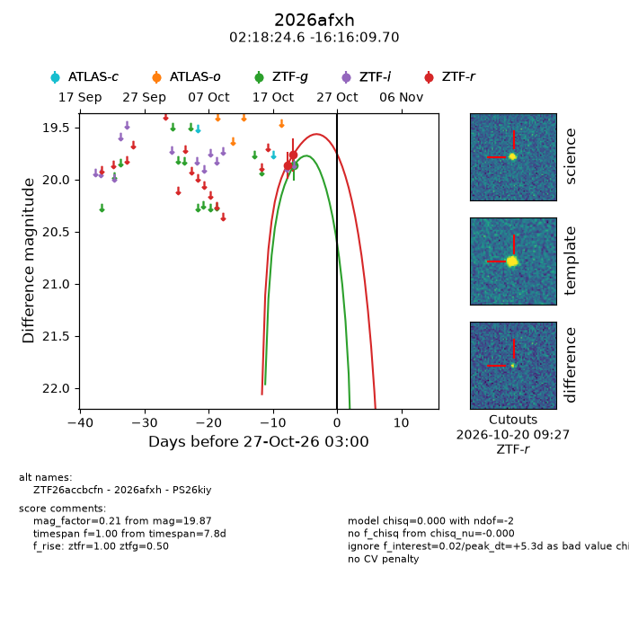
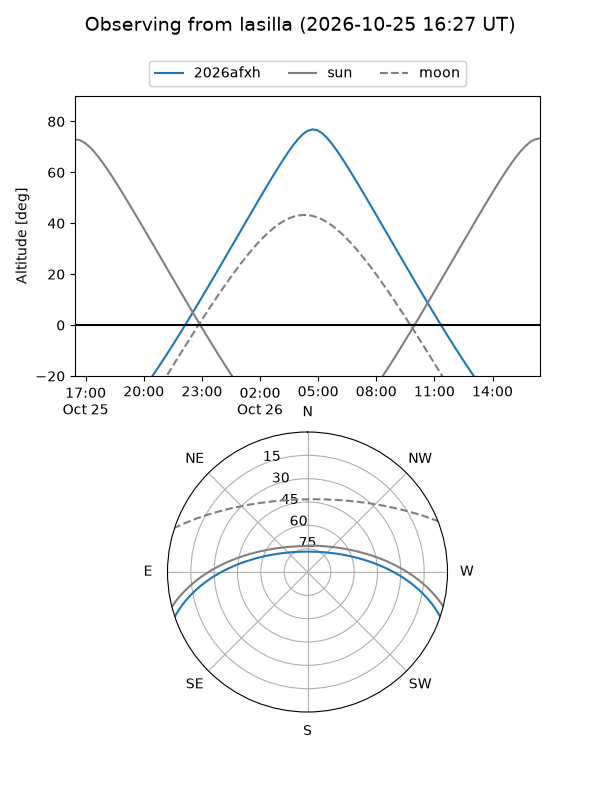
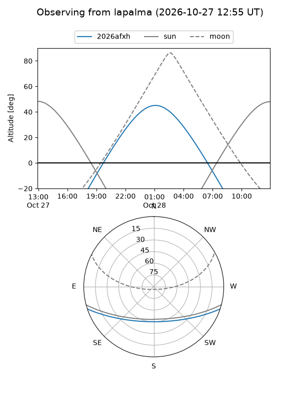
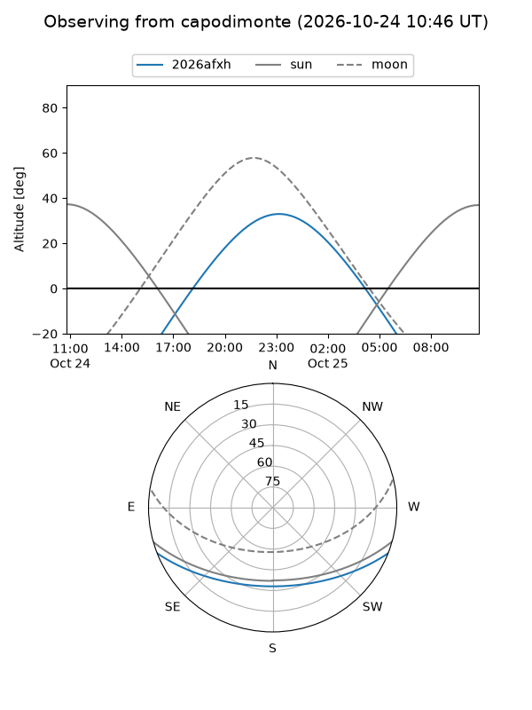
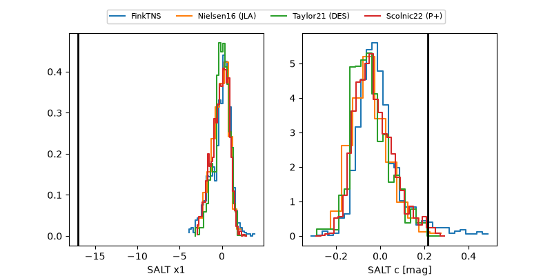

2026afxh
Target 2026afxh at 2026-10-27 03:01
Aliases and brokers:
FINK-ZTF: ztf.fink-portal.org/ZTF26accbcfn
Lasair-ZTF: lasair-ztf.lsst.ac.uk/objects/ZTF26accbcfn
ALeRCE-ZTF: alerce.online/object/ZTF26accbcfn
YSE-PZ: ziggy.ucolick.org/yse/transient_detail/2026afxh
TNS name: wis-tns.org/object/2026afxh
Direct TNS query: direct search
alt names
ZTF26accbcfn (ztf,fink_ztf)
2026afxh (tns,yse)
PS26kiy (panstarrs)
Coordinates:
equatorial (ra, dec) = 34.6023,-16.26936
equatorial (HMS+DMS) = 02:18:24.55,-16:16:09.70
galactic (l, b) = (189.0769,-67.11870)
Flags:
peak dt: +5.3
Photometry:
last ztfg=19.87, ztfr=19.76
1 ztfg, 2 ztfr detections
Lightcurve

Visibility



Additional plots
